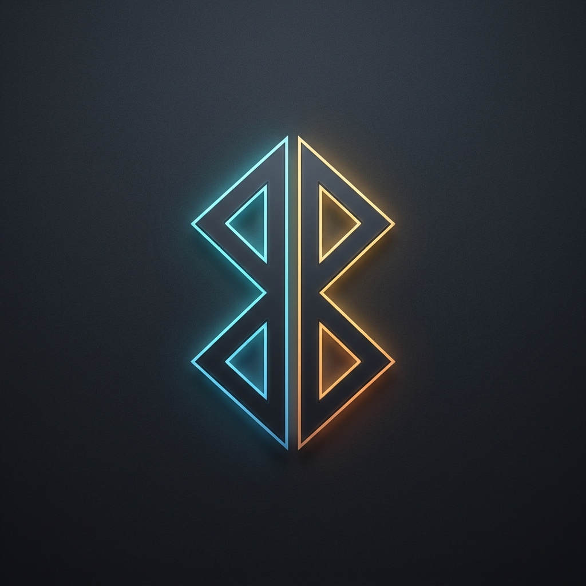

Dualtooth Get Dualtooth ($9)Apple AirPods provide incredible noise cancellation and audio quality—until you switch operating systems. If you have to put your AirPods back into the case and hold the pairing button every single reboot, Dualtooth fixes the cryptographic link key conflict.
Apple headphones utilize modern Bluetooth Low Energy audio standards. Each time you pair them:
LinkKey tied to your Bluetooth controller's hardware address.
Fixing this manually requires decoding Sysinternals registry dumps, calculating reverse byte hex notations, and modifying BlueZ info configuration files under /var/lib/bluetooth/.
Dualtooth synchronizes your AirPods keys seamlessly:
--undo flag and automatic .bak snapshots.One-time $9.00 lifetime license. Instant standalone Windows executable (.exe).
Get Dualtooth for AirPods ($9.00)← Back to Dualtooth Homepage · Compatible with AirPods (Gen 1-4), AirPods Pro (1-2), AirPods Max, and Beats.